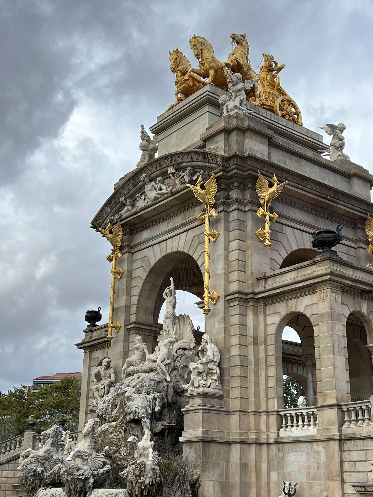
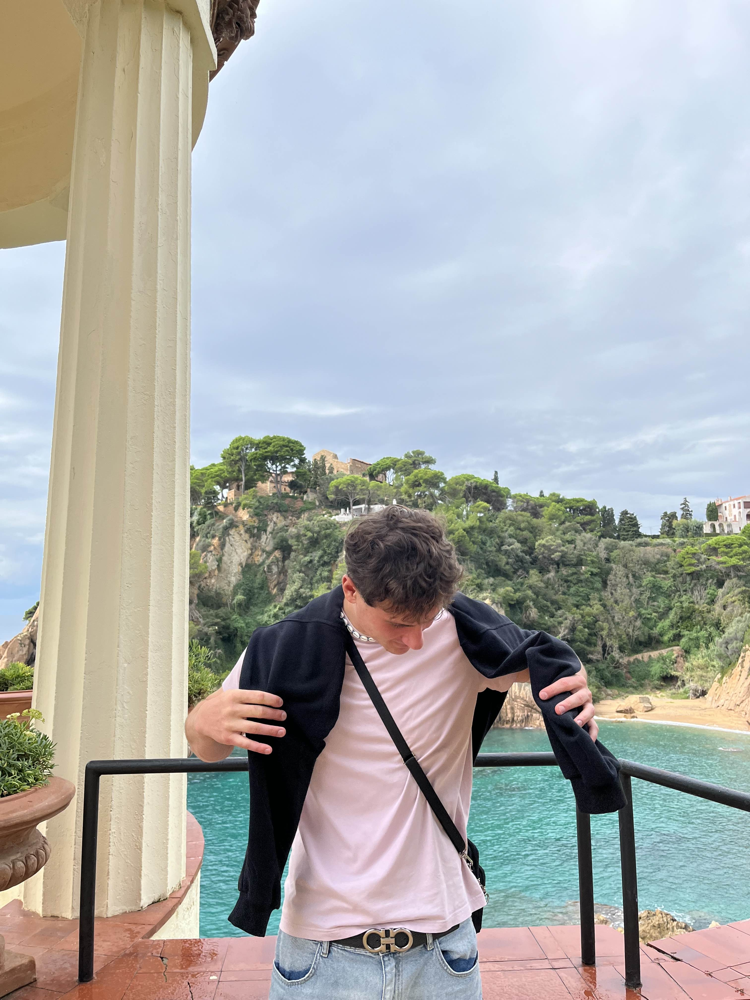
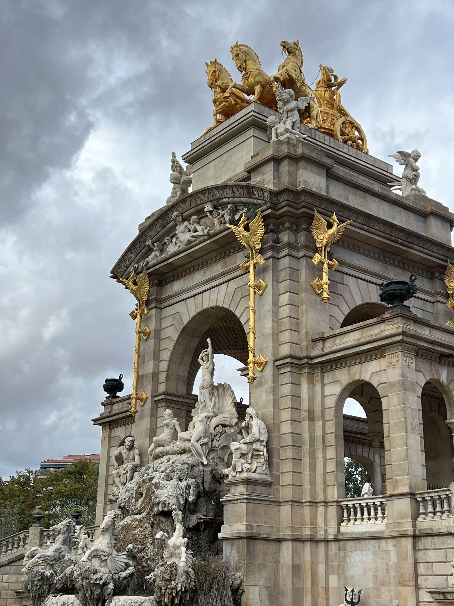
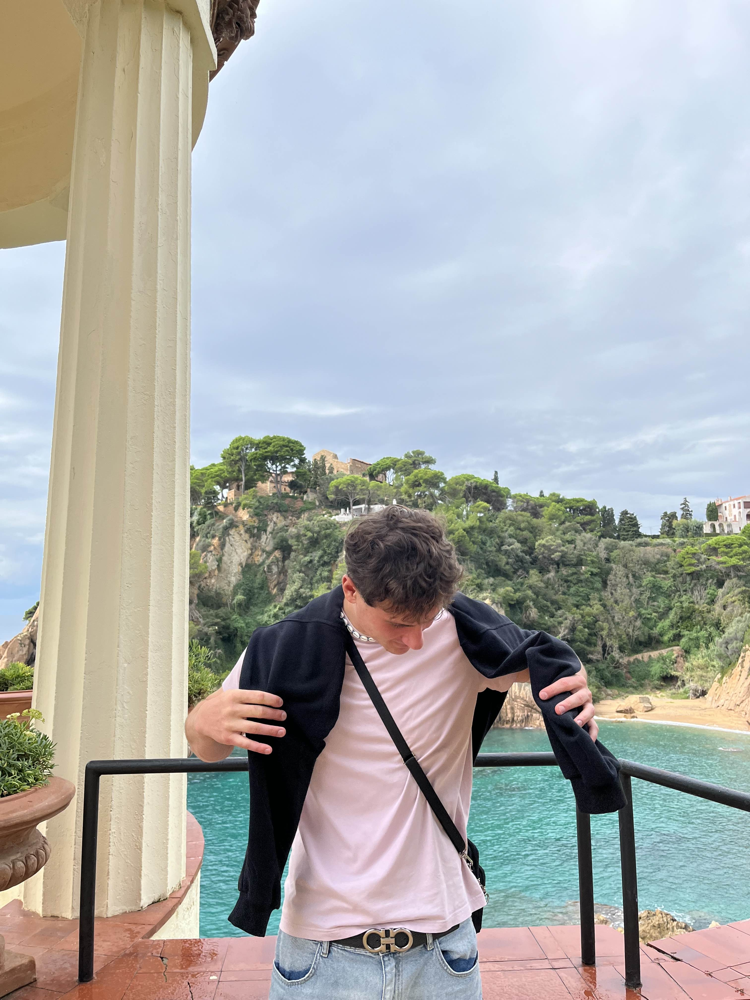
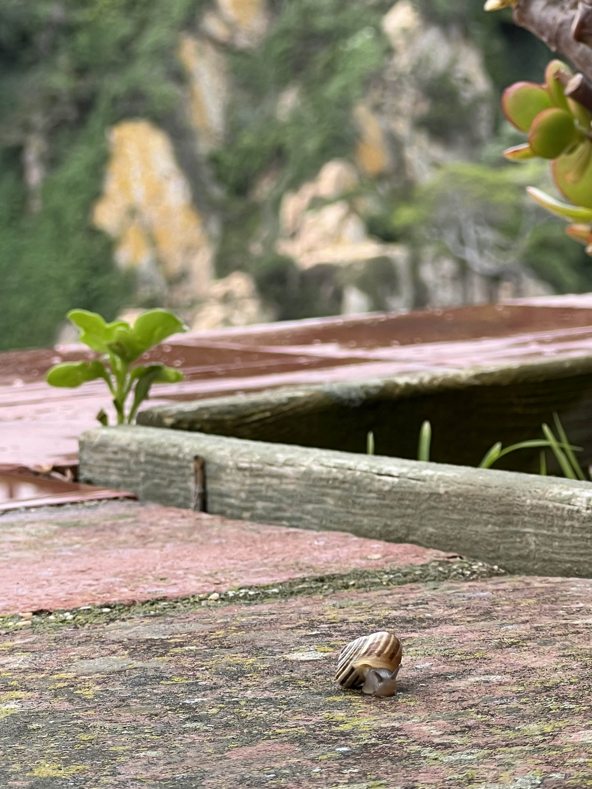
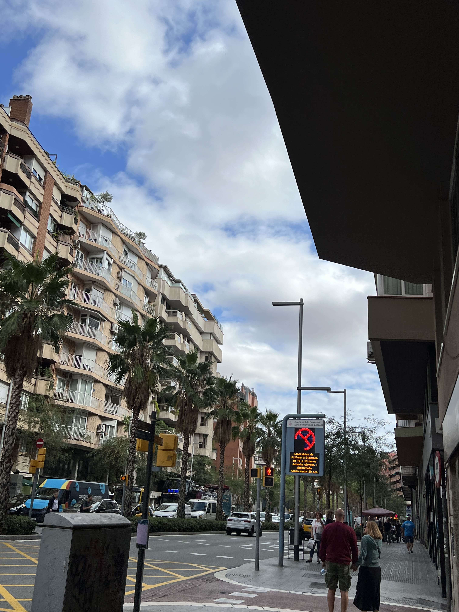
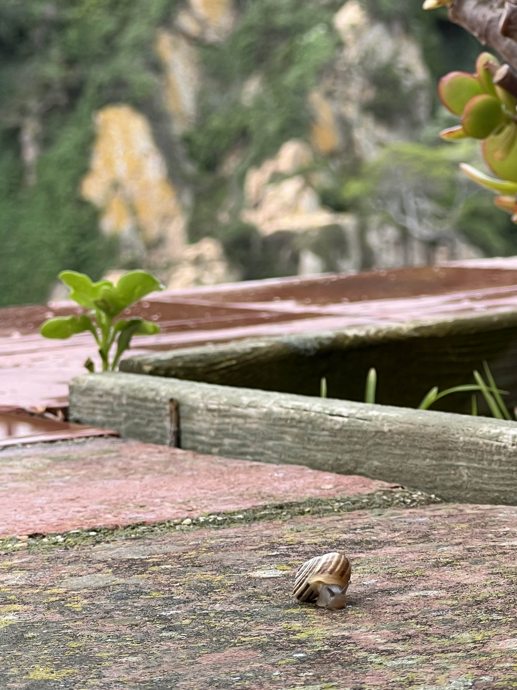
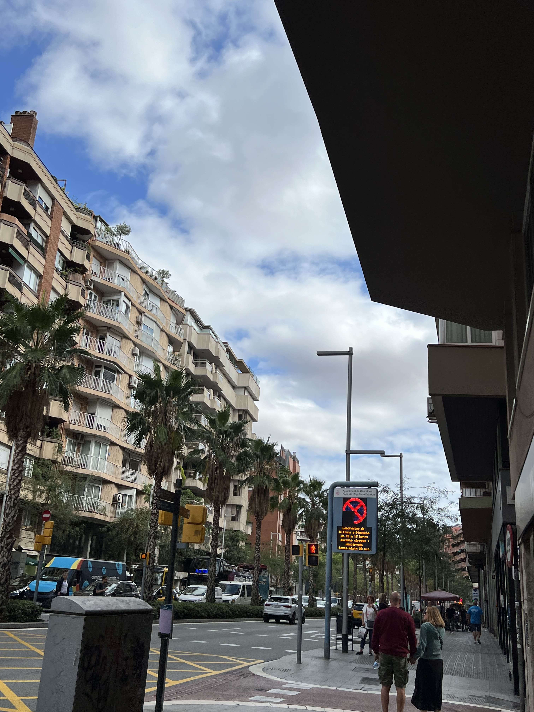

 



Co trenuję?
Trenuję kalistenikę od 6 lat, a od 2 lat moja pasja przerodziła się w bardziej zaawansowaną gimnastykę na kołach. W ramach tego treningu uczę się wielu wymagających figur, takich jak iron cross, inverted cross, planche, maltesse czy front lever. Część z tych figur już udało mi się opanować, co stanowi dla mnie ogromną satysfakcję i motywację do dalszego rozwoju. Dbam także o zdrową dietę, starając się odżywiać w miarę możliwości w sposób, który wspiera moje treningi. Ponadto staram się być aktywnym przez cały dzień, co pomaga mi zachować trzeźwy umysł oraz utrzymywać wysoką energię na co dzień. Sport daje mi nie tylko siłę fizyczną, ale również mentalną, ucząc wytrwałości, dyscypliny i koncentracji. To pasja, która daje mi mnóstwo radości i pomaga w codziennym życiu.
Moja inna pasja – Podróżowanie
W tym roku odwiedziłem Hiszpanię, gdzie zwiedziłem Barcelonę, Gironę oraz Blanes. Uwielbiam poznawać nowe kultury i zwiedzać ciekawe miejsca. Każda podróż to dla mnie okazja do odkrywania nowych tradycji, smaków i historii. W przyszłym roku planuję odwiedzić Włochy i Grecję – dwie krainy pełne wspaniałych zabytków, pięknych krajobrazów i pysznej kuchni. Podróżowanie to dla mnie nie tylko forma relaksu, ale także sposobność do poszerzania horyzontów i zbierania niezapomnianych wspomnień.